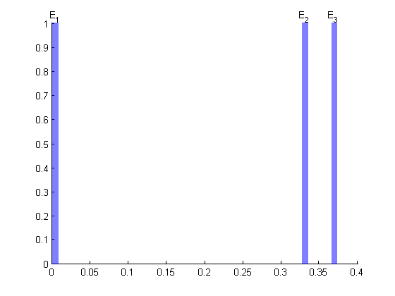
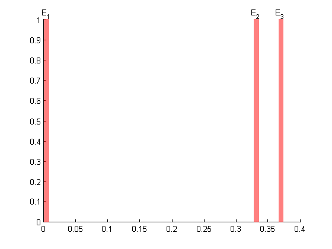
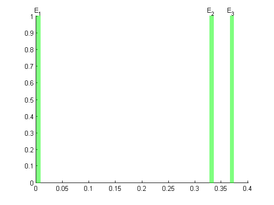

Events
Events are simple object to use and are aimed to facilitate illustration of epochs in any time of data.
close all; eTimes = sort(rand(1,3)*1); eLabels={'E_1','E_2','E_3'}; eventColor = 'b'; e=Events(eTimes,eLabels,eventColor); e.plot;
The color of the event markers can also be specified
figure; e.plot([],'r'); %dont specify handle, use red; handel = gca; figure; e.plot([],'g'); %dont specify handle, use green; 